<title>Textos que no inventan, montados</title>
<meta name="claude:viewport-fit-sides" content="cover">
<link rel="preconnect" href="https://fonts.googleapis.com">
<link rel="preconnect" href="https://fonts.gstatic.com" crossorigin>
<link rel="stylesheet" href="https://fonts.googleapis.com/css2?family=EB+Garamond:ital,wght@0,400;0,500;1,400&family=Inter+Tight:wght@400;500;600&display=swap">
<style>
/* La misma columna que la página de elegir: papel y tinta, terracota para el antes y oliva para
   el después. Cada texto lleva sus fotos de la app de verdad, una al lado de la otra. */
:root{
  --paper:#F2EDE0;--card:#FBF8F1;
  --ink:#1F1C17;--ink-2:#4A453C;--ink-3:#77705F;
  --line:#C9C0A8;
  --olive:#3E5A3A;--olive-soft:rgba(62,90,58,.10);
  --terra:#A85E43;
  --display:'EB Garamond',Georgia,'Times New Roman',serif;
  --ui:'Inter Tight',system-ui,-apple-system,'Segoe UI',sans-serif;
}
@media (prefers-color-scheme: dark){:root:not([data-theme="light"]){
  --paper:#1d1a14;--card:#2c271f;--ink:#EDE5D3;--ink-2:#c0b49e;--ink-3:#B2A995;--line:#4d4536;
  --olive:#98B58B;--olive-soft:rgba(122,154,109,.14);--terra:#E8A98F;color-scheme:dark;
}}
:root[data-theme="dark"]{
  --paper:#1d1a14;--card:#2c271f;--ink:#EDE5D3;--ink-2:#c0b49e;--ink-3:#B2A995;--line:#4d4536;
  --olive:#98B58B;--olive-soft:rgba(122,154,109,.14);--terra:#E8A98F;color-scheme:dark;
}
*{box-sizing:border-box}
body{margin:0;background:var(--paper);color:var(--ink);font-family:var(--ui);font-size:16px;line-height:1.55;-webkit-text-size-adjust:100%}
main{max-width:920px;margin:0 auto;padding-left:max(16px,env(safe-area-inset-left,0px));padding-right:max(16px,env(safe-area-inset-right,0px));padding-block:40px 72px}
h1,h2{font-family:var(--display);font-style:italic;font-weight:400;line-height:1.15;margin:0;text-wrap:balance}
h1{font-size:clamp(32px,6vw,44px)}
h2{font-size:clamp(23px,4vw,28px);margin:56px 0 4px;padding-top:22px;border-top:1px solid var(--line);display:flex;gap:12px;align-items:baseline;flex-wrap:wrap}
h2 .n{font-weight:500;color:var(--olive)}
h2 .letra{font-family:var(--ui);font-style:normal;font-size:13px;letter-spacing:.1em;text-transform:uppercase;color:var(--olive);background:var(--olive-soft);border-radius:999px;padding:2px 10px}
p{margin:0 0 12px;color:var(--ink-2);max-width:68ch}
strong{color:var(--ink);font-weight:500}
.eyebrow{font-size:12px;letter-spacing:.14em;text-transform:uppercase;color:var(--ink-3);margin-bottom:10px}
.lead{font-family:var(--display);font-size:21px;color:var(--ink-2);line-height:1.45;margin-top:14px}
.caja{background:var(--olive-soft);border-radius:14px;padding:16px 20px;margin:22px 0 0;display:grid;gap:6px}
.caja p{margin:0}
.caja .q{font-family:var(--display);font-style:italic;font-size:22px;color:var(--ink)}
code.cod{font-family:var(--ui);font-weight:600;color:var(--olive);background:var(--card);border-radius:6px;padding:1px 7px;font-size:15px}

.par{display:grid;grid-template-columns:1fr 1fr;gap:14px;margin:14px 0 4px;align-items:start}
.par.ancho{grid-template-columns:1fr}
figure{margin:0;min-width:0;display:grid;gap:6px}
figcaption{font-size:12px;letter-spacing:.12em;text-transform:uppercase;color:var(--ink-3)}
figure.antes figcaption{color:var(--terra)}
figure.despues figcaption{color:var(--olive);font-weight:600}
figure img{width:100%;height:auto;display:block;border-radius:12px;border:1px solid var(--line);background:var(--card)}
.par.movil figure img{max-width:340px}
.texto{background:var(--card);border-radius:12px;padding:12px 14px;font-size:14px;color:var(--ink-2);white-space:pre-wrap;overflow-wrap:anywhere}
.nota{font-size:14px;color:var(--ink-3);max-width:68ch;margin:6px 0 0}
@media (max-width:560px){ .par{grid-template-columns:1fr} .par.movil figure img{max-width:100%} }
</style>

<main>
  <div class="eyebrow">PACE · 30 de octubre · para Ez</div>
  <h1>Textos que no inventan, montados</h1>
  <p class="lead">Tus letras, puestas en la app de verdad. Cada texto con su foto de antes (la 0.187.0, la de hoy) y la de después, a 360 px como un móvil y a 1280 como un ordenador.</p>
  <p>Elegiste <strong>1A 2A 3B 4A</strong>, el <strong>5A</strong> con «Has terminado un Foco de 45 minutos», el <strong>6</strong> como estaba, <strong>7A 8A 9A 10A 11A 12A</strong>, el <strong>13A</strong> por el momento y el <strong>14A</strong>. Todo va en español y en inglés, cada cambio tiene su prueba y la app pasa entera. Está en una rama aparte: nada llega a pacegrass.app ni a los móviles hasta tu «júntalo».</p>

  <div class="caja">
    <p class="q">Si te parece bien</p>
    <p>Dile <code class="cod">júntalo</code> a la coordinadora. Mira sobre todo el 3: en tu pantalla no cabía tal como lo elegiste y te cuento cómo lo he resuelto. Si algo no te convence, dime el número y lo cambio.</p>
  </div>

  <h2><span class="n">1</span>La bienvenida <span class="letra">A</span></h2>
  <p>El botón de abajo deja probar primero y dice dónde se prepara la semana después. En Ajustes el mismo botón sigue diciendo «Cada semana es distinta», porque allí quita la semana guardada.</p>
  <div class="par movil">
    <figure class="antes"><figcaption>Antes</figcaption>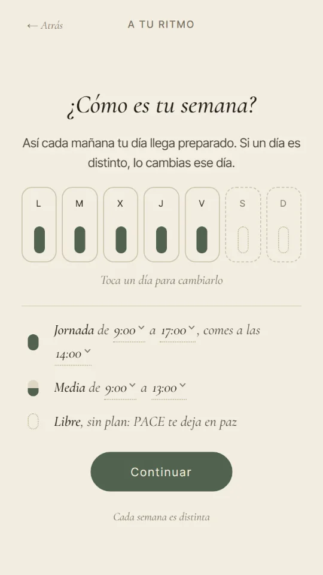</figure>
    <figure class="despues"><figcaption>Después</figcaption>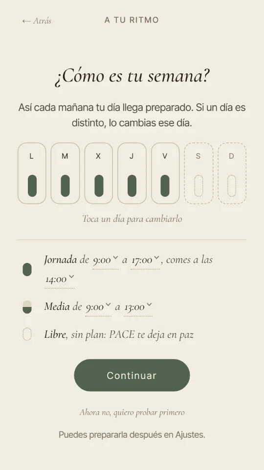</figure>
  </div>

  <h2><span class="n">2</span>«¿Cuánto trabajas hoy?» <span class="letra">A</span></h2>
  <p>En el ordenador. La frase mide casi lo mismo que la de antes y la tarjeta no crece.</p>
  <div class="par ancho">
    <figure class="antes"><figcaption>Antes</figcaption>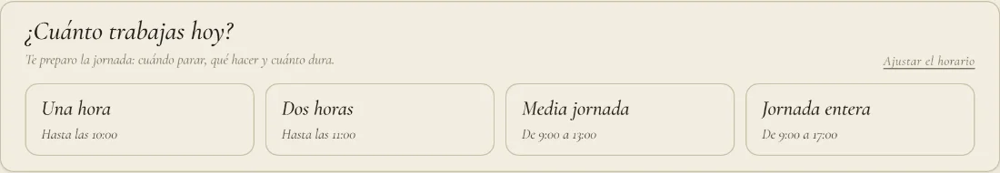</figure>
    <figure class="despues"><figcaption>Después</figcaption>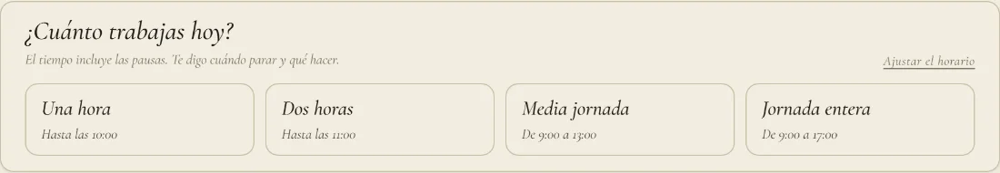</figure>
  </div>

  <h2><span class="n">3</span>La etiqueta del material <span class="letra">B</span></h2>
  <p>Una sola etiqueta, más larga. En un portátil (1280 px) y en «Ver todo» del móvil caben las dos etiquetas, como la elegiste.</p>
  <div class="par ancho">
    <figure class="antes"><figcaption>Antes · 1280</figcaption>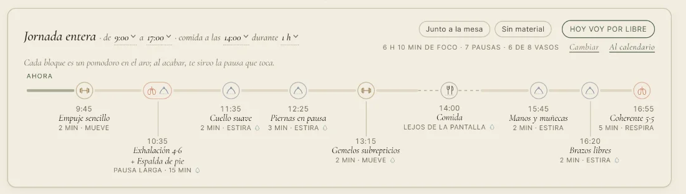</figure>
    <figure class="despues"><figcaption>Después · 1280</figcaption>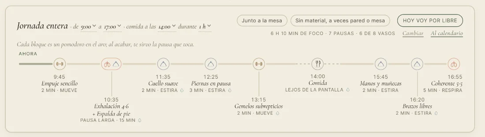</figure>
  </div>
  <div class="caja">
    <p class="q">Una cosa que no se veía en la página de elegir</p>
    <p>En una pantalla grande como la tuya (1536 px), la cabecera del día pone todo en una fila: el título, el resumen, las etiquetas y «Hoy voy por libre». Con la etiqueta larga al lado de «Junto a la mesa» no cabe: el título del día se parte en dos líneas (en tres a 1440 y a 1920) y el panel crece 24 px.</p>
    <p>Lo he montado así: <strong>en esa fila, la etiqueta va sola y en dos líneas</strong> (ya dice «mesa»). El título vuelve a una línea y el panel crece solo 5 px. En el portátil y en el móvil siguen las dos etiquetas. Si prefieres las dos en una línea aunque el título se parta, dime <code class="cod">3 tal cual</code>.</p>
  </div>
  <div class="par ancho">
    <figure class="antes"><figcaption>Antes · 1536</figcaption>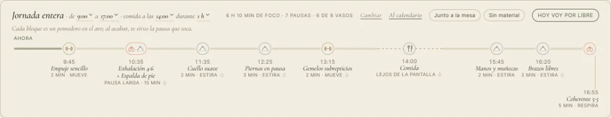</figure>
    <figure class="antes"><figcaption>La 3B tal cual · 1536 · el título se parte</figcaption>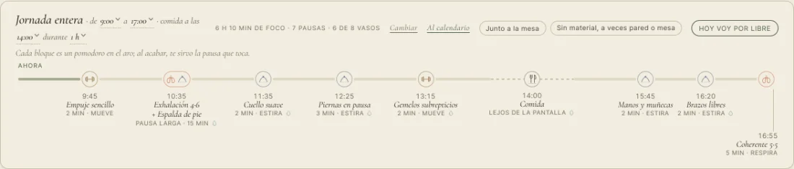</figure>
    <figure class="despues"><figcaption>Montado · 1536</figcaption>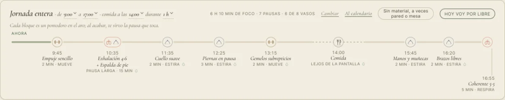</figure>
  </div>
  <div class="par movil">
    <figure class="antes"><figcaption>Antes · 360</figcaption>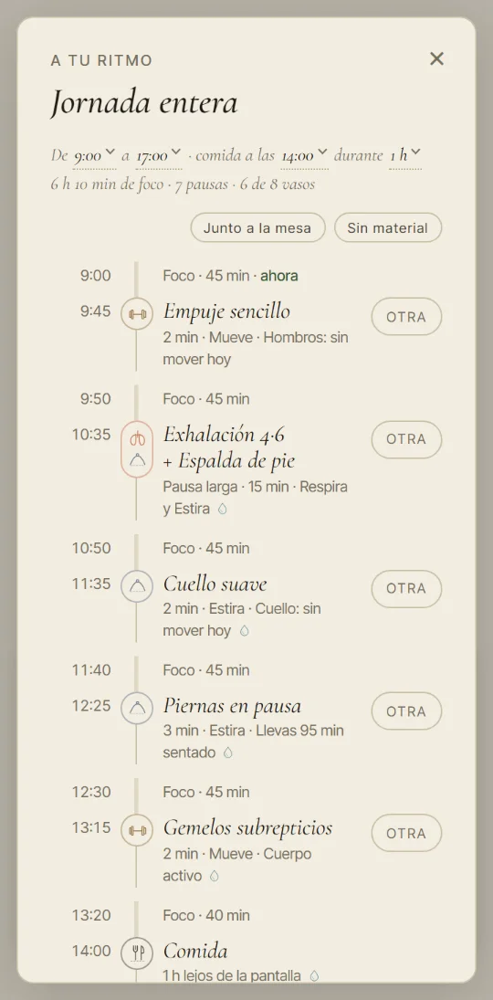</figure>
    <figure class="despues"><figcaption>Después · 360</figcaption>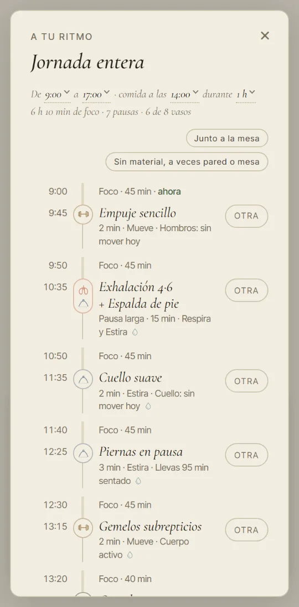</figure>
  </div>

  <h2><span class="n">4</span>«Ahora no» en la pausa <span class="letra">A</span></h2>
  <p>Con «A tu ritmo». La pausa sigue en la línea del día; «Seguir con el bloque 2» es lo que la deja atrás, como antes. En la pausa por libre también dice «Ahora no» (en las fotos del 5).</p>
  <div class="par movil">
    <figure class="antes"><figcaption>Antes</figcaption>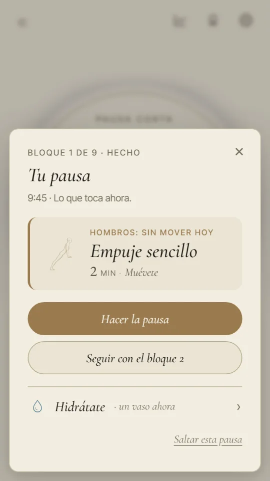</figure>
    <figure class="despues"><figcaption>Después</figcaption>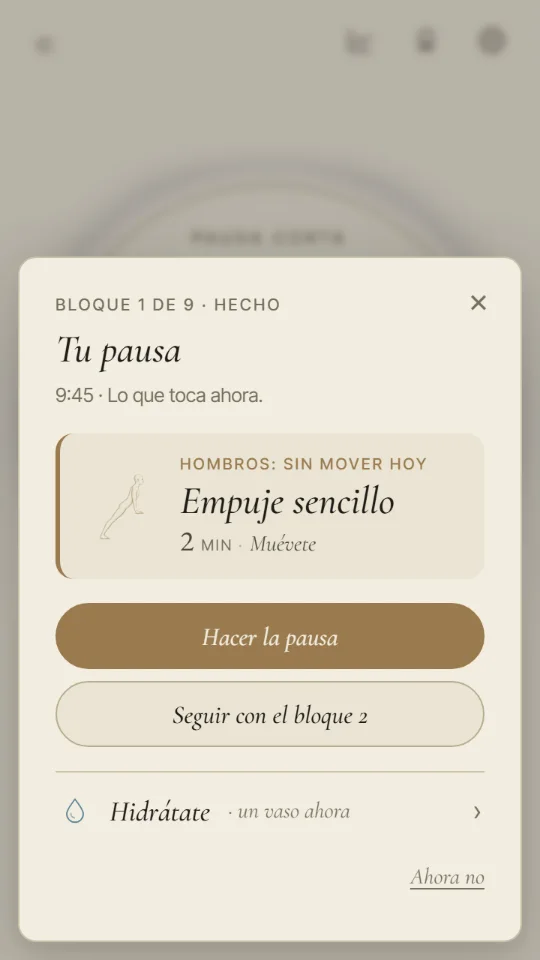</figure>
  </div>

  <h2><span class="n">5</span>Por qué te propone esa pausa <span class="letra">A, con «Has terminado»</span></h2>
  <p>Sin «A tu ritmo», tras un Foco de 45 minutos y, a las cuatro de la tarde, sin ningún vaso apuntado. Las de «Hoy aún no hay sesión de Estira, Mueve o Respira» salen igual cuando toca.</p>
  <div class="par movil">
    <figure class="antes"><figcaption>Antes</figcaption>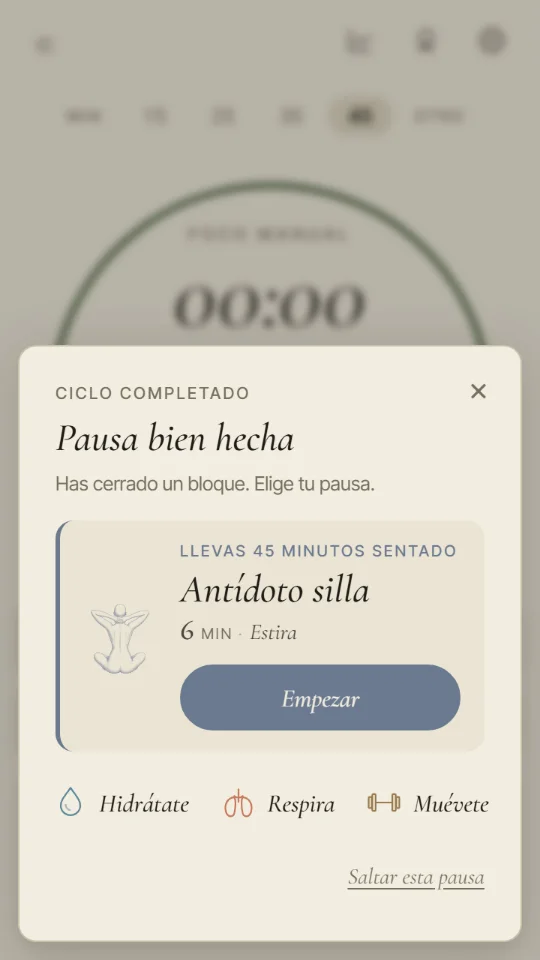</figure>
    <figure class="despues"><figcaption>Después</figcaption>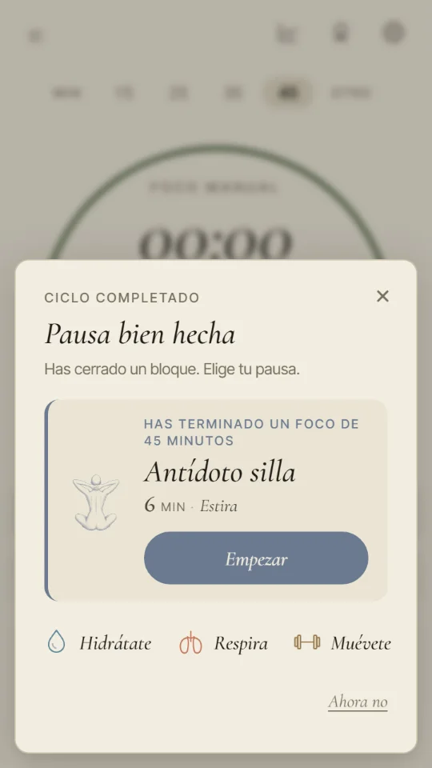</figure>
  </div>
  <div class="par movil">
    <figure class="antes"><figcaption>Antes</figcaption>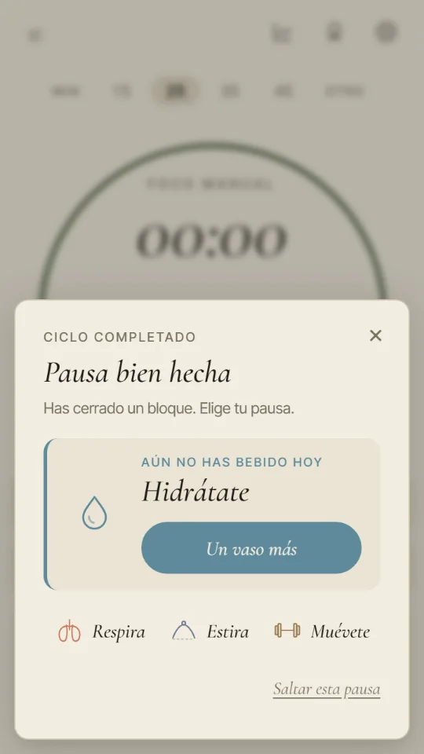</figure>
    <figure class="despues"><figcaption>Después</figcaption>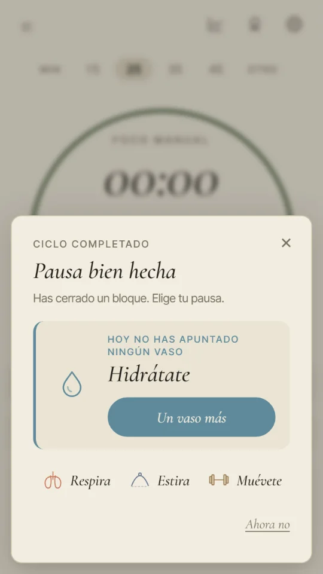</figure>
  </div>
  <p class="nota">«Has terminado un Foco de 45 minutos» pasa a dos líneas en un móvil de 360 px y la ventana crece 15 px; sigue cabiendo entera. La misma frase sale en «Ver ejercicio» de los bloques cortos: allí el número puede juntar dos bloques seguidos, que siguen siendo minutos de Foco sin pausa.</p>

  <h2><span class="n">6</span>La frase de «A tu ritmo» <span class="letra">igual</span></h2>
  <p>«Llevas 50 min sentado» y «Caderas: sin mover hoy» se quedan como estaban.</p>

  <h2><span class="n">7</span>Al terminar una rutina <span class="letra">A</span></h2>
  <div class="par movil">
    <figure class="antes"><figcaption>Antes · Estira</figcaption>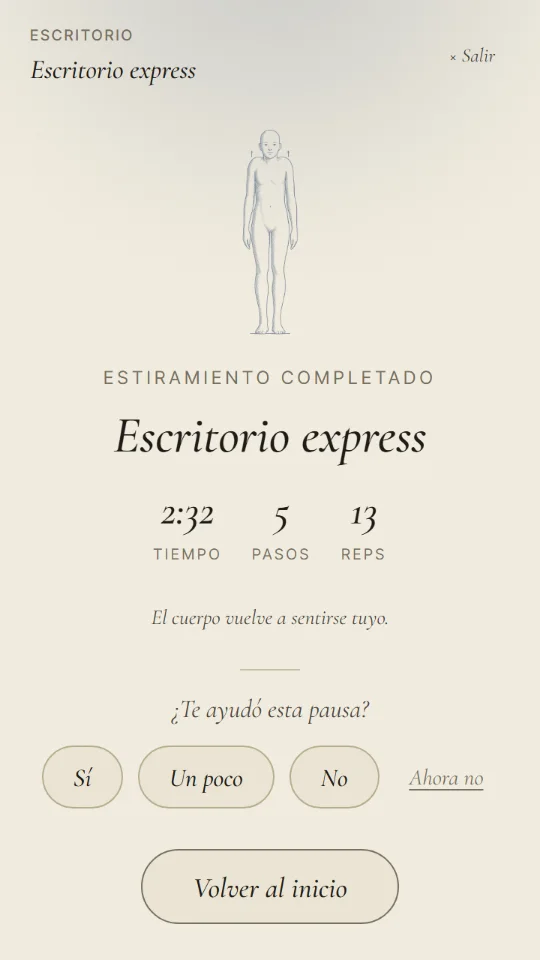</figure>
    <figure class="despues"><figcaption>Después · Estira</figcaption></figure>
  </div>
  <div class="par movil">
    <figure class="antes"><figcaption>Antes · Respira</figcaption>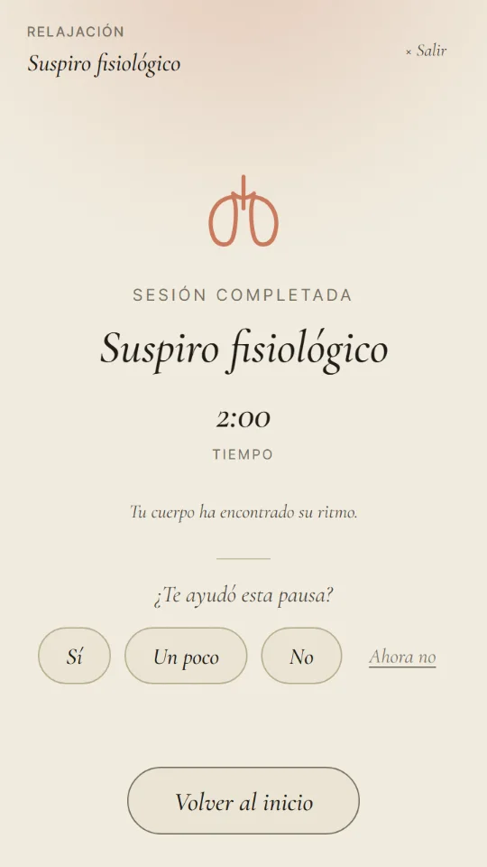</figure>
    <figure class="despues"><figcaption>Después · Respira</figcaption>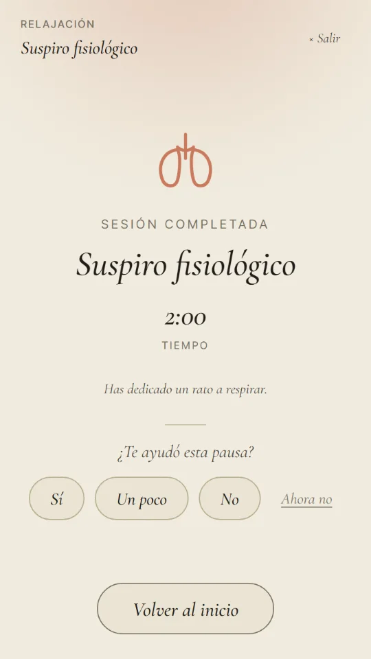</figure>
  </div>

  <h2><span class="n">8</span>Estadísticas, «Hoy» sin nada <span class="letra">A</span></h2>
  <div class="par ancho">
    <figure class="antes"><figcaption>Antes</figcaption></figure>
    <figure class="despues"><figcaption>Después</figcaption>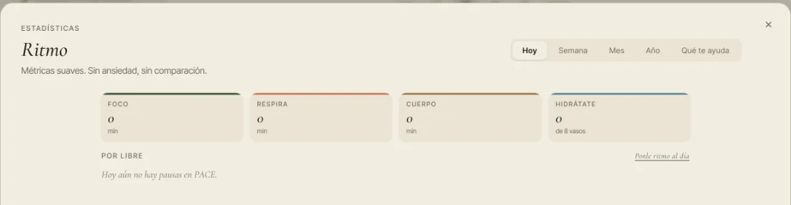</figure>
  </div>

  <h2><span class="n">9</span>Ajustes · Tus datos <span class="letra">A</span></h2>
  <p>El pie dice que lo de este aparato no se sincroniza; en el móvil pasa a dos líneas. Y al importar una copia dice que se sustituye sin juntarse.</p>
  <div class="par movil">
    <figure class="antes"><figcaption>Antes</figcaption></figure>
    <figure class="despues"><figcaption>Después</figcaption></figure>
  </div>
  <div class="par movil">
    <figure class="antes"><figcaption>Antes · importar</figcaption>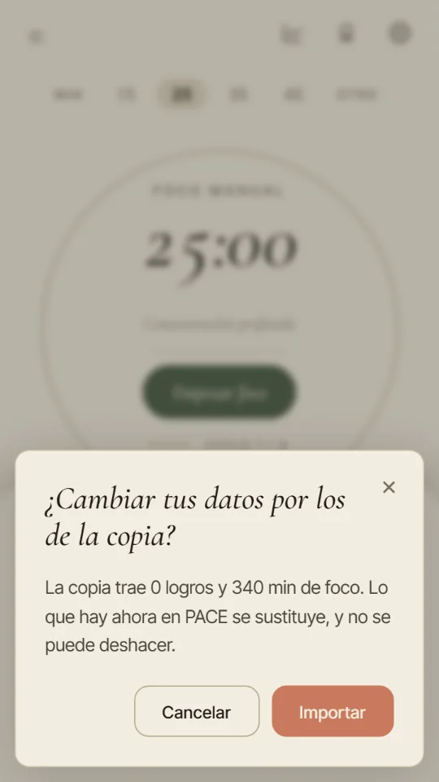</figure>
    <figure class="despues"><figcaption>Después · importar</figcaption>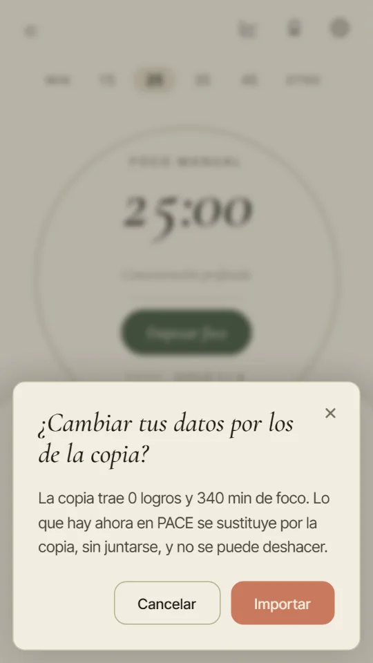</figure>
  </div>

  <h2><span class="n">10</span>El calendario, mientras PACE está abierto <span class="letra">A</span></h2>
  <p>En Android, con el calendario del móvil y una reunión a las 12:00. Antes de conectar y justo al conectar.</p>
  <div class="par movil">
    <figure class="antes"><figcaption>Antes · sin conectar</figcaption>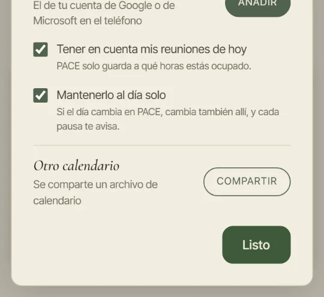</figure>
    <figure class="despues"><figcaption>Después · sin conectar</figcaption>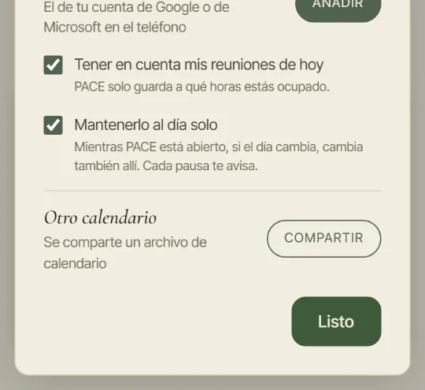</figure>
  </div>
  <div class="par movil">
    <figure class="antes"><figcaption>Antes · al conectar</figcaption>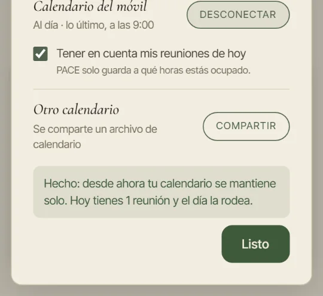</figure>
    <figure class="despues"><figcaption>Después · al conectar</figcaption>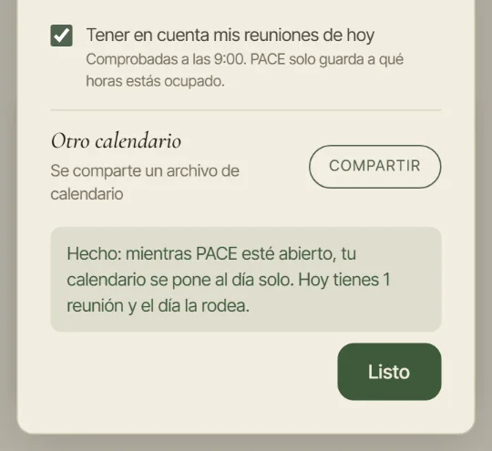</figure>
  </div>

  <h2><span class="n">11</span>Cuándo se leyeron las reuniones <span class="letra">A</span></h2>
  <p>Ya conectado: bajo el calendario, «Plan enviado a las 9:00»; bajo las reuniones, cuándo se comprobaron. Y si la lectura falla un poco después (a las 9:21 en la foto), lo dice y sigue con las de las 9:00. Antes no se notaba nada.</p>
  <div class="par movil">
    <figure class="antes"><figcaption>Antes · conectado</figcaption></figure>
    <figure class="despues"><figcaption>Después · conectado</figcaption>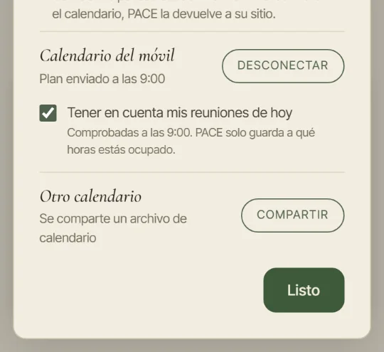</figure>
  </div>
  <div class="par movil">
    <figure class="antes"><figcaption>Antes · la lectura falla</figcaption>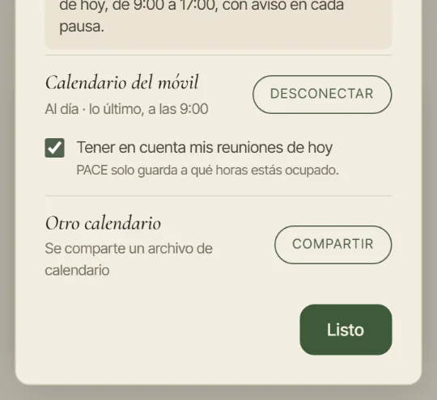</figure>
    <figure class="despues"><figcaption>Después · la lectura falla</figcaption>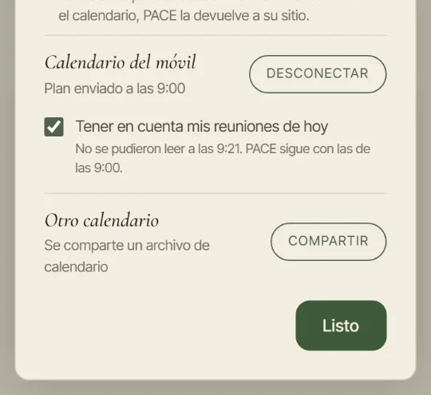</figure>
  </div>

  <h2><span class="n">12</span>Las pausas se cambian desde PACE <span class="letra">A</span></h2>
  <p>En la hoja, la línea pequeña bajo el resumen (en las fotos del 11). Y en cada pausa escrita en el calendario, al final del texto del evento:</p>
  <div class="par">
    <figure class="antes"><figcaption>Antes · el evento</figcaption><div class="texto">Mueve · Empuje sencillo (2 min).
Después, 45 min de foco.

PACE · A tu ritmo · pacegrass.app</div></figure>
    <figure class="despues"><figcaption>Después · el evento</figcaption><div class="texto">Mueve · Empuje sencillo (2 min).
Después, 45 min de foco.
Cambia esta pausa desde PACE.

PACE · A tu ritmo · pacegrass.app</div></figure>
  </div>
  <p class="nota">Los bloques de foco sueltos (el primero del día y el de después de comer) no la llevan: no son pausas. Al llegar la versión, las pausas de ese día se reescriben una vez para llevar la frase.</p>

  <h2><span class="n">13</span>/premium <span class="letra">A</span></h2>
  <p>La variedad, en la lista de PACE completo. El calendario, en una pregunta con sus límites, fuera de lo que se vende en la web.</p>
  <div class="par movil">
    <figure class="antes"><figcaption>Antes · la lista</figcaption>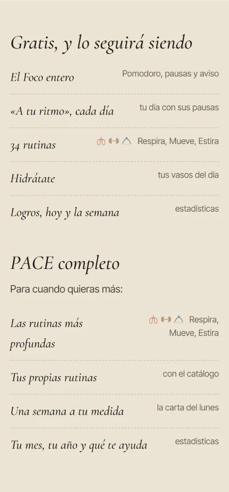</figure>
    <figure class="despues"><figcaption>Después · la lista</figcaption>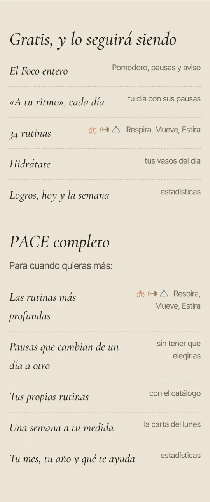</figure>
  </div>
  <div class="par movil">
    <figure class="antes"><figcaption>Antes · preguntas</figcaption>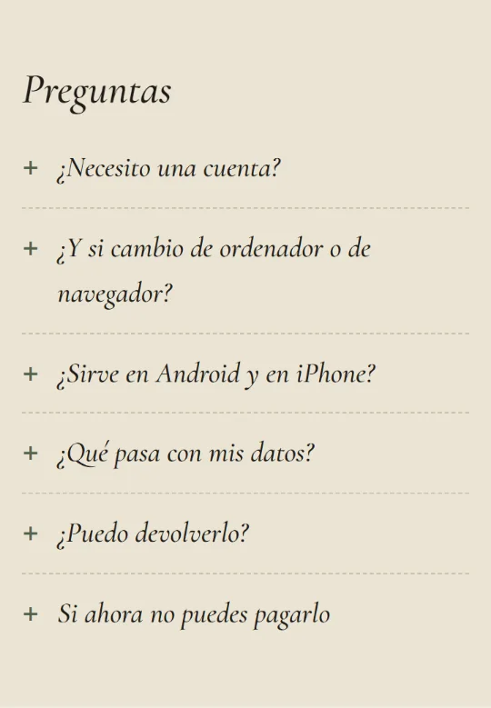</figure>
    <figure class="despues"><figcaption>Después · preguntas</figcaption>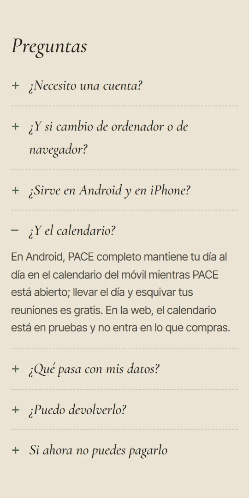</figure>
  </div>

  <h2><span class="n">14</span>La ficha de Google Play <span class="letra">A</span></h2>
  <p>En español; el inglés cambia igual. El párrafo de «A tu ritmo» ya está en Play: hay que volver a pegarlo en Play Console. El de PACE completo se pega con la v1.</p>
  <div class="par">
    <figure class="antes"><figcaption>Antes</figcaption><div class="texto">… Si tienes reuniones, PACE las lee de tu calendario y las esquiva, y también puede llevar el día entero a tu calendario.

… PACE completo añade las rutinas más profundas, tus propias rutinas, una semana a tu medida con la carta del lunes y tu mes y tu año.</div></figure>
    <figure class="despues"><figcaption>Después</figcaption><div class="texto">… Si tienes reuniones, PACE las lee del calendario del móvil y las esquiva, y también puede llevar el día entero a tu calendario.

… PACE completo añade pausas que cambian de un día a otro, las rutinas más profundas, tus propias rutinas, una semana a tu medida con la carta del lunes, tu mes y tu año, y tu calendario al día mientras PACE está abierto.</div></figure>
  </div>
</main>
